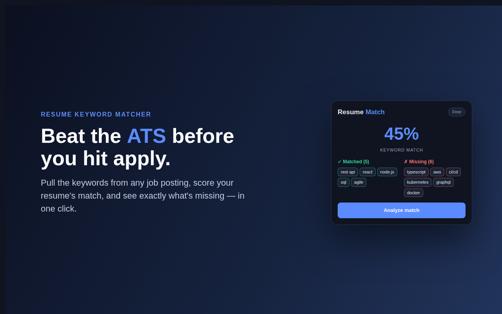
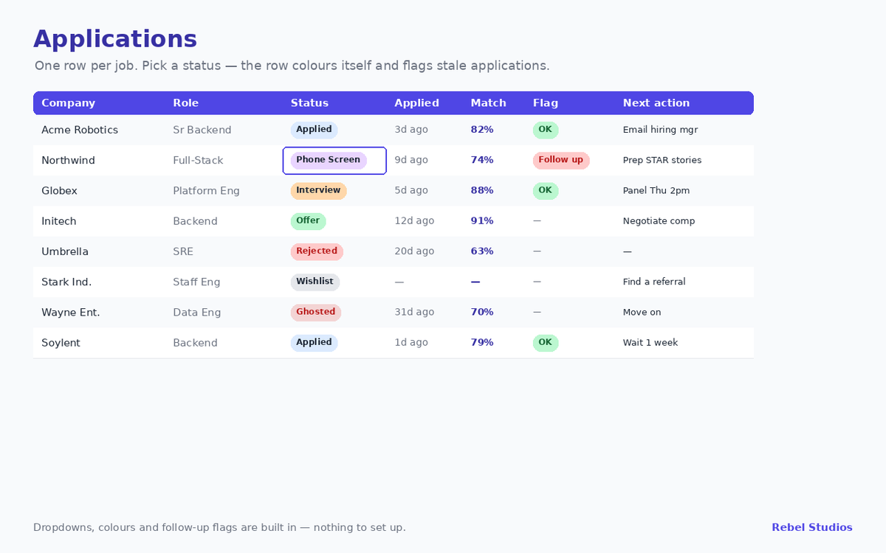
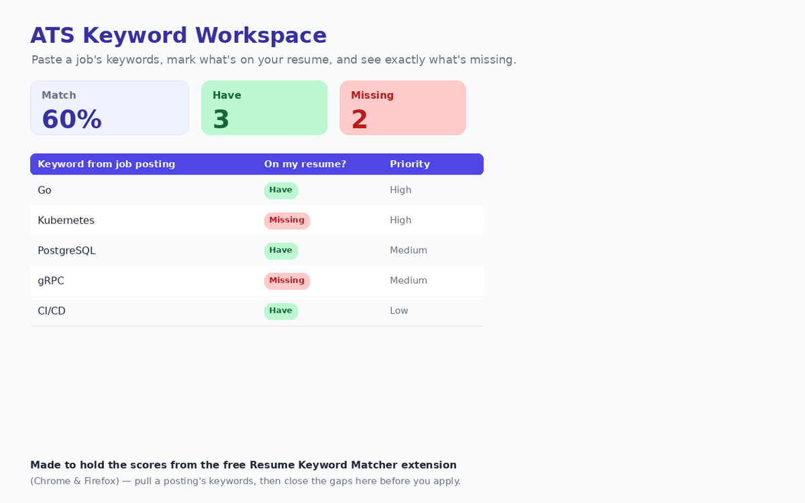

Applicant Tracking Systems rank your resume by how well it matches the job's keywords. This Chrome extension shows you that match before you apply — pull the posting's keywords, score your resume, and see exactly what's missing.
One click while viewing a job on LinkedIn, Indeed or a company site — it reads the posting and extracts the keywords.
Paste your resume once (stored locally); get a match percentage plus the terms you have and the ones you're missing.
Add the missing keywords and apply with a resume that actually gets past the filter.
Everything runs on your device. Your resume never leaves your browser; nothing is collected.
When you open a job posting and run the extension, it reads the visible text of the posting and pulls out the terms that behave like requirements — named technologies, tools, certifications, methodologies and role titles — rather than every word on the page. Common English and the boilerplate that appears in every listing are discarded, because “team player” matching “team player” tells you nothing.
Those terms are then checked against the resume you have stored, and you get a percentage plus two lists: the terms you already have, and the ones you do not.
The missing list is the part worth your attention. The percentage is a summary; the list is the instruction.
It is worth being straight about the limits, because a confident-looking number invites more trust than it has earned.
Used properly, the tool answers one narrow question well: given this posting, which of its terms are absent from my resume? That is genuinely useful, and it is less than a score out of a hundred implies.
You paste your resume once and it is kept in your browser’s own extension storage on the device you are using. It is not uploaded, not synced to us, and not attached to an account — there is no account to attach it to. Keyword extraction and comparison both happen in the page, in your browser.
This matters more than it might seem. A resume is a dossier: your employment history, your education, frequently your address and phone number. Handing that to a free web service in exchange for a match percentage is a poor trade, and it is the trade most of these tools ask you to make. Clearing the extension’s storage removes it completely, because there is no second copy anywhere.
Keep one master resume containing everything you have genuinely done, then tailor per application. Run the extension on the posting, look at the missing terms, and add back only the ones that are true of you — usually they are, and they were simply cut for length. That is a two-minute edit rather than a rewrite, and it is the entire workflow the tool is built around.
Where a missing term is not true of you, leave it out. A keyword you cannot speak to in an interview is worse than a lower score.

The extension tells you whether one posting matches your resume. It does not remember which postings you have already answered, which have gone quiet, or which need chasing this week — and that is where most searches actually fall apart.


Job Hunt Tracker is a five-tab workspace — dashboard, applications, ATS keywords, interview prep and a short read-me — that opens in both Google Sheets and Excel. The keyword tab is built to hold the match percentages this extension produces, so the two work as one workflow. One-time purchase, nothing to install.
It's in review now. Leave your email and I'll tell you the day it's live.
Get notified →Written while building this tool:
How to get your resume past an ATS
ATS-friendly resume format: what actually parses
ATS resume keywords: why your resume gets auto-rejected